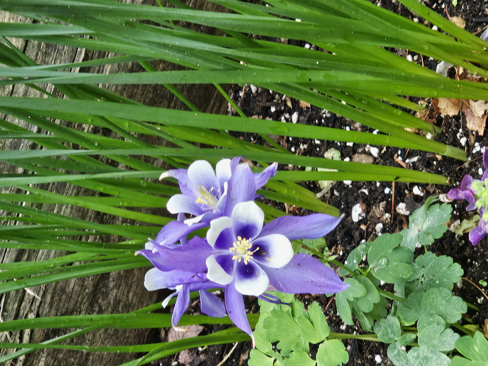

Let me tell you a little about myself
I graduated with a Bachelor's of Science in Astro-Computer-Science from Umass Amherst in 2024.
I completed my honors thesis "Exploring GPIES Data with Optimized Processing Methods" with Amherst College under Professor Kate Follette.
I conducted research over a span of three years while in college and worked on three separate research projects,
exploring black holes, exoplanets, and seafloor sediment samples.
Exploring GPIES Data with Optimized Processing Methods (Professor Kate Follette, Amherst College, 2023-2024)
For my honors thesis project, I worked on methods used to help detect planets outside our solar system. Because these planets are extremely faint and difficult to see next to bright stars, special computer techniques are needed to remove excess starlight from telescope images. Currently, astronomers manually adjust the settings used to remove the starlight. I worked on an automated pipeline that helps speed up this process, while also creating better results by detecting the best possible setting combination. I learned to build on existing work and to assess previous approaches and identify areas for improvement or optimization. Why Is Sagittarius A* quiet? (Professor Daniel Wang, Umass Amherst, 2021-2024)
My research focuses on the supermassive black hole Sagittarius A* (SgrA*) in the center of our galaxy. Quiet, or in scientific terms, quiescent black holes take in very little mass. Most supermassive black holes are considered quiescent, but we have limited understanding as to why this is so. Since SgrA* is the closest supermassive black hole, it presents the perfect candidate for answering questions such as our own.
This project taught me problems solving and to be very detail oriented. I also learned to think outside the box when a problem seems insurmountable.
Exoplanets to Microbes (Professor Kate Follette, Amherst College, 2023)
With this project, I was introduced to the biological side of Astronomy. The Boston University Biology lab collaborated with our team of astronomy researchers to develop a pipeline that eases and automates the process of detecting microbes in sediment samples. We worked directly with seafloor samples and learned about fluorescent dyes used in microscopy and how to differentiate between microbes and mineral grains.
During this internship, I learned how to collaborate effectively both with fellow astronomers and across disciplines. I also developed the ability to translate complex technical language into terms that are more broadly understandable.
During this internship I continued my research under professor Daniel Wang. More information about my research can be found under the "Research" section.
Five College Astronomy Department (FCAD) Internship (Summer 2023)
- - Reviewed Astronomy paper for publishing
- - Analyzed cell images with FIJI
- - Wrote python algorithm for cell image processing
Lee SIP Internship (Summer 2022)
- - Wrote Unix program that corrects the absolute astrometry in Chandra observations
- - Presented research at FCAD Summer programm (Five Colleges Astronomy Department)
- Python
- Java
- Unix/Linux Scripting
- C
- Bash
- Machine Learning
- Data Visualization
- Network Protocols
- Ciao Programming
- Blender
- Quantitative Analysis
- Microsoft Office
- Html/JavaScript/Css
- GUI
- MATLAB

I spend the majority of my free time by either volunteering or
developing my non-professional skills such as baking, playing the piano, golfing, and drawing.
Some of the places I have or am volunteering with include the CASA,
the Massachusetts Horticulture Garden, and the Community Table and Food Pantry at my local church.
Each of these positions had me connect with people of all kinds of backgrounds and helped deepen my interpersonal skills.
The flower in the photo is a Colorado Blue Columbine. When I saw it at the Horticulture Garden, I felt compelled to capture it.
I hope it brightens your day as it did mine.